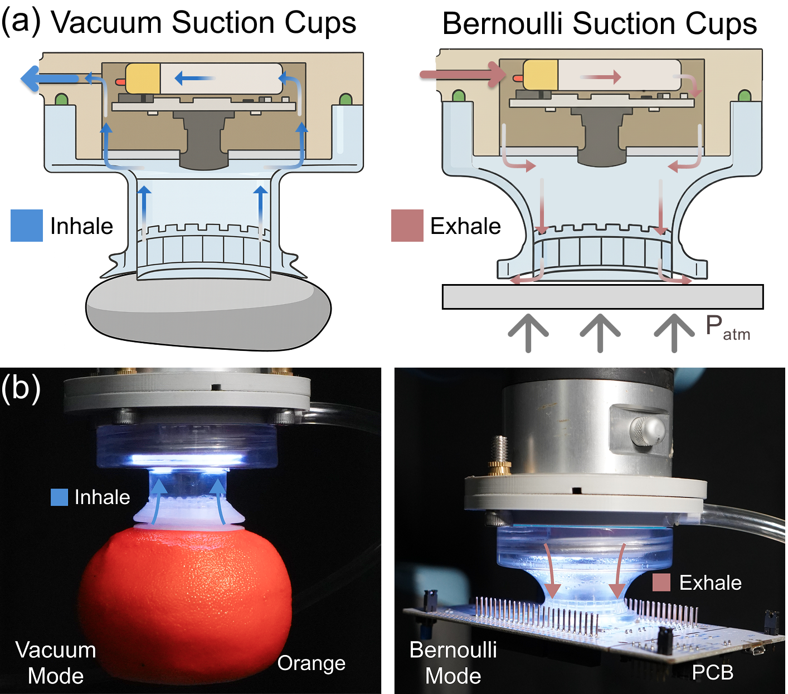
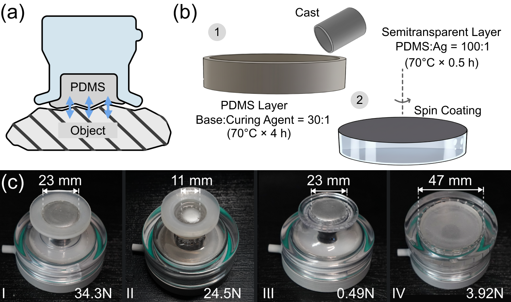

Hardware Design
System Integration and Architecture
The system features modular component integration including airways, optical system (OV5640 camera with 180° fisheye lens), electronics (ESP32S3 controller), and mechanical assembly. Wireless charging configuration enables standalone operation with a 3.7V 300mAh lithium battery, supporting both tethered and wireless modes.

Reconfigurable Dual-Mode Suction Mechanisms
FlexiCup supports both vacuum and Bernoulli suction modes through modular mechanical configurations. Vacuum mode provides strong adhesion for rigid objects, while Bernoulli mode enables contactless levitation and gentle manipulation of delicate items. Four modular bottom configurations accommodate diverse object geometries.
Vision-Tactile Sensing System
A single 180° fisheye camera enables dynamic switching between environmental vision and precise tactile perception through LED illumination control. The dual-zone sensing system provides central zone switchable visuotactile sensing and peripheral zone continuous spatial awareness. Multimodal fusion achieves 100% recognition accuracy across diverse object categories, significantly outperforming vision-only (82.5%) and tactile-only (46.7%) approaches.
Dual-Zone Sensing

The peripheral zone maintains environmental awareness through continuous vision across both modalities, while the central zone provides high-resolution tactile feedback through LED-controlled illumination switching. This architecture enables simultaneous spatial context understanding and precise contact detection.
PDMS Membrane Design
The membrane consists of a dual-layer system with PDMS base layer (30:1 ratio, 70°C×4h) providing mechanical compliance and semitransparent reflective layer (Ag:PDMS 100:1, 70°C×0.5h) enabling photometric tactile imaging. Four modular configurations (I-IV) support both vacuum (I-II) and Bernoulli (III-IV) operations, achieving adhesion force ranges from sub-Newton to over 30N.